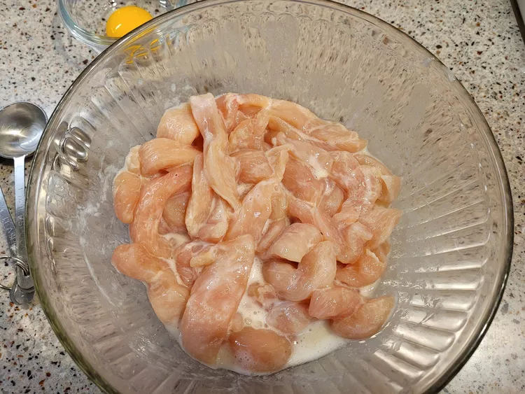

Velveting Chicken
Velveting Chicken Breast, Chinese Restaurant Style

Description
Velveting chicken makes it as moist and tender as what's served at the best Chinese restaurants. This is not my technique — I got it online. Don't limit this chicken to just Chinese dishes. The velveted chicken can then be stir-fried with vegetables and sauce or stored for a few hours in the refrigerator before cooking.
Ingredients
- 1 large egg white
- 1 tablespoon Chinese rice vinegar
- 1 tablespoon cornstarch
- 1 teaspoon kosher salt
- 1 pound skinless, boneless chicken breast, thinly sliced
- 8 cups water
- 1 tablespoon peanut oil
Steps
- Whisk together egg white, vinegar, cornstarch, and salt in a large bowl until smooth. Add sliced chicken; mix to coat thoroughly. Cover with plastic wrap and marinate in the refrigerator for 30 minutes.
- Bring water and oil to a boil in a pot over high heat. Reduce heat to medium.
- Remove chicken from the marinade and shake off excess; discard remaining marinade. Add chicken to boiling water and cook until just white on the outside but not completely cooked through, about 1 minute.
- Drain chicken and finish cooking in a hot oiled wok or skillet until no longer pink in the center and the juices run clear, or store parboiled chicken in the refrigerator in a sealed container until ready to use, up to a few hours.
Home